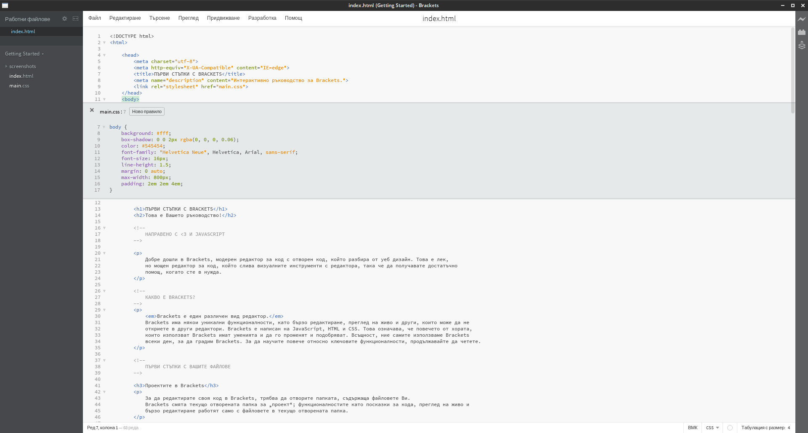

Добре дошли в Brackets, модерен редактор за код с отворен код, който разбира от уеб дизайн. Това е лек, но мощен редактор за код, който слива визуалните инструменти с редактора, така че да получавате достатъчно помощ, когато сте в нужда.
Brackets е един различен вид редактор. Brackets има някои уникални функционалности, като бързо редактиране, преглед на живо и други, които може да не откриете в други редактори. Brackets е написан на JavaScript, HTML и CSS. Това означава, че повечето от хората, които използват Brackets имат уменията и да го променят и подобряват. Всъщност, ние самите използваме Brackets всеки ден, за да градим Brackets. За да научите повече относно ключовите функционалности, продължавайте да четете.
За да редактирате своя код в Brackets, трябва да отворите папката, съдържаща файловете Ви. Brackets смята текущо отворената папка за „проект“; функционалностите като подсказки за кода, преглед на живо и бързо редактиране работят само с файловете в текущо отворената папка.
След като приключите с разглеждането на този примерен проект и искате да редактирате собствен код, можете да използвате падащото меню в лявата странична лента, за да превключвате между папките. В момента там е избрано „Getting Started“ — това е папката, съдържаща файла, който разглеждате в момента. Щракнете върху падащото меню и изберете „Отваряне на папка…“, за да отворите своя собствена папка. Можете да използвате това падащо меню, за да се връщате обратно към папките, които сте отворили по-рано, включително този примерен проект.Без повече превключване между документи и забравяне къде сте били последно. Когато редактирате HTML, използвайте комбинацията Cmd/Ctrl + E, за да отворите бърз редактор на място, който показва използвания CSS. Променете CSS кода, натиснете ESC и се връщате към редактирането на HTML, или просто оставете CSS правилата отворени и те ще станат част от редактора Ви за HTML. Ако натиснете ESC извън вмъкнатия бърз редактор, всички такива ще се скрият. Бързото редактиране разпознава и правила, описани чрез LESS и SCSS, включително и вложени правила.
Искате да го видите в действие? Поставете курсора върху елемента по-горе и натиснете Cmd/Ctrl + E. Би трябвало да се появи бърз редактор за CSS, показващ CSS правилото, което се прилага към този елемент. Бързото редактиране може да работи също и за класове и идентификатори. Можете дори да го използвате с Вашите файлове с LESS и SCSS. Можете да създавате правила по същия начин. Щракнете върху един от елементите по-гори и натиснете Cmd/Ctrl + E. В момента няма правила за тях, но можете да натиснете бутона „Ново правило“ и да добавите ново правило за . Можете да използвате същата клавишна комбинация, за да редактирате и други неща — например функции на JavaScript, цветове и времеви функции за анимации; ние постоянно добавяме още.
За сега редакторите на място не могат да се влагат един в друг, така че можете да използвате бързото редактиране само когато курсорът е в „пълния“ редактор.
Нали знаете как години наред си играем на „запазване и презареждане“? Играта, в която правите промяна в редактора си, натискате „запазване“, превключвате към браузъра и натискате „презареждане“, за да видите резултата? С Brackets, няма да ви се налага да я играете повече.
Brackets ще отвори жива връзка с браузъра Ви и ще му праща промените в HTML и CSS кода докато пишете! Може би вече правите нещо подобно с различни инструменти, работещи в браузъра, но с Brackets няма да има нужда да копирате готовия код обратно в редактора. Кодът Ви работи в браузъра, но живее в редактора!
С Brackets е лесно да видите как промените Ви в HTML и CSS ще променят страницата. Когато курсорът е върху CSS правило, Brackets ще осветява всички елементи, върху които то влияе, в браузъра. Също така, докато редактирате файл с HTML, Brackets ще осветява съответстващите елементи в браузъра.
Ако имате Google Chrome, може да опитате това. Щракнете иконката на светкавица в горния десен ъгъл на прозореца на Brackets или натиснете Cmd/Ctrl + Alt + P. Когато прегледът на живо е включен за даден HTML документ, всички свързани CSS документи могат да бъдат редактирани в реално време. Иконката ще смени цвета си от сив на златист, когато Brackets установи връзка с браузъра Ви. Сега поставете курсора си върху елемента по-горе. Забележете синия контур, който се появява около изображението в Chrome. Сега натиснете Cmd/Ctrl + E, за да отворите CSS правилата. Опитайте да промените размера на рамката от 10 на 20 пиксела или променете цвета на фона от „transparent“ на „hotpink“. Ако Brackets и браузърът Ви работят един до друг, ще видите как промените Ви автоматично се виждат в браузъра. Яко, нали?Засега Brackets поддържа преглед на живо само за HTML и CSS. И все пак, в текущото издание, промените във файловете с код на JavaScript се презареждат автоматично при запазване на файла. В момента работим върху поддръжката на преглед на живо и за JavaScript. Прегледът на живо работи само с Google Chrome, но се надяваме да поддържаме всички основни браузъри в бъдеще.
Онези от нас, които не могат да запомнят съответствието между цветовете, изразени чрез шестнадесетични числа и стойности ЧЗС, Brackets прави лесна и бърза проверката на това кой цвят се използва. Както в CSS, така и в HTML, можете просто да посочите дадена цветова стойност или преливка, и Brackets ще Ви покаже как изглежда този цвят или преливка автоматично. Същото важи и за изображенията: просто посочете връзката към изображението в редактора и ще се появи миниатюрен изглед на това изображение.
За да опитате бързия преглед сами, поставете курсора върху елемента в началото на този документ и натиснете Cmd/Ctrl + E, за да отворите бързия редактор на CSS. Сега просто посочете някоя стойност за цвят. Можете да видите това и при преливките, като отворите бърз редактор за елемента и посочите някоя от стойностите за фона. За да опитате прегледа на изображения, поставете курсора върху снимката на екрана, която може да намерите по-нагоре в този документ.Освен всички приятни функционалности, вградени в Brackets, нашата огромна и постоянно нарастваща общност от разработчици на разширения е създала стотици такива, които добавят полезни и удобни функционалности. Ако има нещо, от което се нуждаете, но не намирате в Brackets, много вероятно е някой вече да е създал разширение за това. За да разгледате или претърсите списъка от налични разширения натиснете Файл > Управител на разширения… и изберете раздела „Налични“. Когато намерите това, което искате, просто натиснете бутона „Инсталиране“ до него.
Brackets е проект с отворен код. Разработчици от цял свят допринасят, за да изградим заедно един по-добър редактор за код. Много други създават разширения, които увеличават възможностите на Brackets. Кажете ни какво мислите, споделете идеите си или направо се включете в проекта!